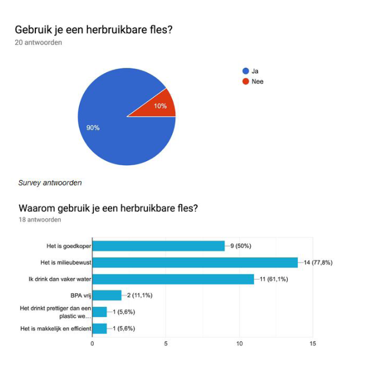
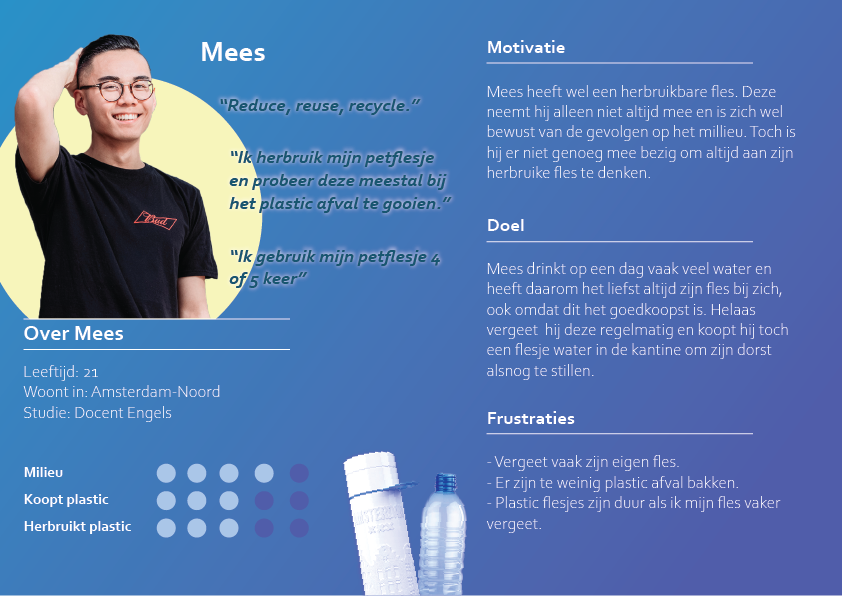
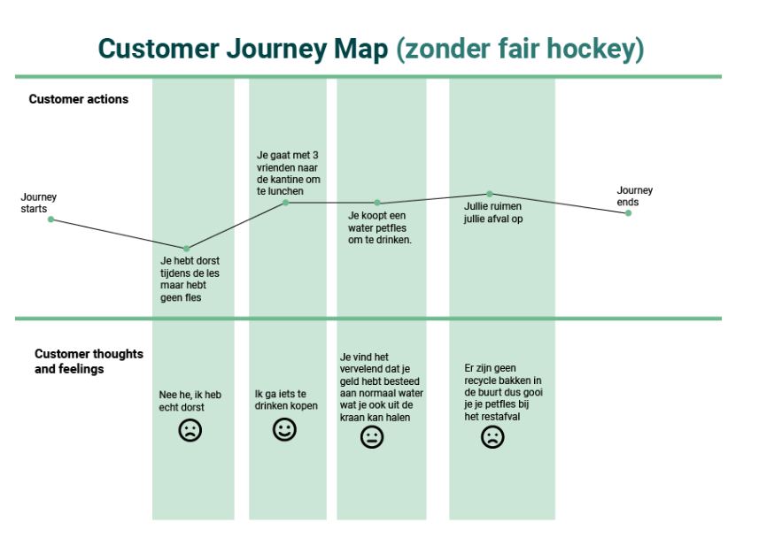
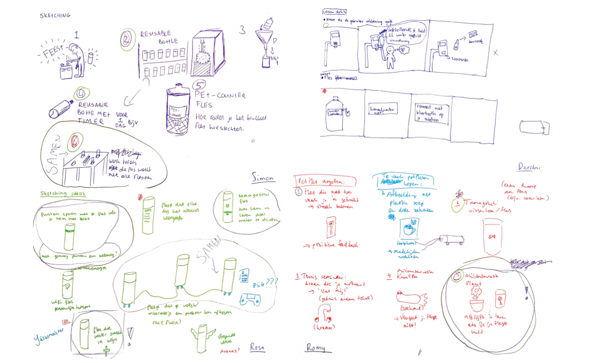
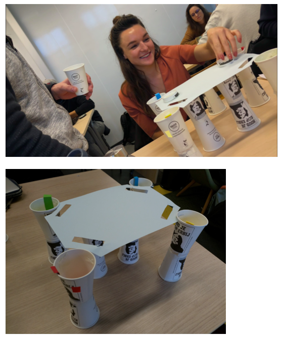
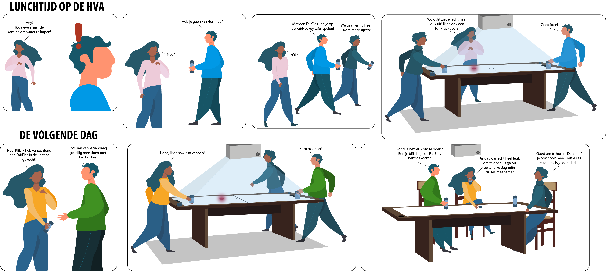

Project Beyond
Project beschrijving
Mijn favoriete project tot nu toe was Project Beyond. Het project duurde 8 weken en bestond uit meerdere vakken. Ik zat samen in een team met Simon Planje, Romy Wiedijk en Darshni Banwarie. Een super leuk team waar ik erg van heb genoten. Voor het project moesten we kiezen uit bepaalde cases. Wij hebben gekozen voor de case Petflessen: Hoe kunnen we het petfles gebruik op de HvA Campus verminderen. Hiervoor moesten wij een interactief design ontwerpen dat hier aan zou bijdragen.
Deliverables
- Interactief design
- Prototype
- Storyboard
- Video
- Design Rationale
- Procesboek
- Presentatie
Proces
Survey & Interviews
Om te beginnen hadden we onderzoek onder studenten gedaan over of ze een petfles of herbruikbare fles gebruikte op school.
Persona
Na de interview en de survey af te nemen met de doelgroep, hebben wij de belangrijkste bevindingen bij elkaar gezameld. Deze bevindingen zijn de meningen die de doelgroep het meeste met elkaar in gemeen hebben. De meest voorkomende meningen of problemen die zij hebben samen opgeteld, is onze persona geworden.
Customer Journey Map
De customer journey is om de gebruikerservaring te visualiseren in de loop van de tijd en de verschillende touchpoints in kaart brengen. De customer journey hebben wij gemaakt a.d.h.v onze eigen ervaring wanneer wij een fles thuis vergeten.
Ideeontwikkeling: Schetsen
In week 4 heeft de groep samen gebrainstormd om tot een aantal ideeën te komen. Via ideation is de groep op een aantal leuke ideeën gekomen, waarvan we 4 hebben uitgewerkt en 1 daarvan hebben gekozen. Er moest ook kritisch nagedacht worden of het idee haalbaar is Uiteindelijk hebben wij gekozen voor een gezamenlijk tafel idee dat wij nu verder willen conceptualiseren.
Eerste prototype: testresultaten
Het eerste concept betreft een air hockey tafel voor 4 personen. Om ons eerste idee te testen hebben we een simpel prototype gemaakt van papier en bekertjes. Iedere speler zou één kleur zijn en de tafel zou met licht feedback geven in de kleur van degene die scoort. Met deze test wilden we erachter komen of men het doel van het spel en de bekertjes (flessen) zouden begrijpen.
Storyboard
Om ons eindconcept duidelijk te maken hebben we het concept gevisualiseerd door middel van een storyboard. In het storyboard wordt laten zien hoe een schooldag van studenten verbeterd wordt zodra zij een herbruikbare drinkfles aanschaffen. Ook laat het zien hoe studenten elkaar kunnen motiveren een herbruikbare fles te kopen en dat deze niet alleen fijn is om water uit te drinken maar ook om een spel mee te spelen.
Animatie Video
Simon heeft voor onze eindpresentatie een animatie gemaakt die ons concept nog verder uitlegt.
Eindoplevering

Voor de eindoplevering hebben we een presenatie gehad over ons concept. Hier moesten we het protoype, de animatie en ons proces laten zien aan onze project begeleider. Uiteindelijk hebben wij voor dit project een 8,2 gekregen.